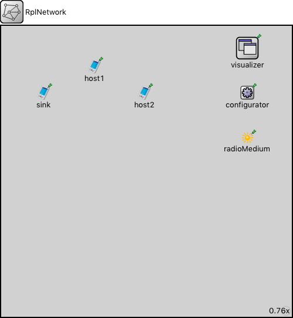

This documentation is released under the Creative Commons license
This documentation is released under the Creative Commons license(no description)
| Name | Type | Default value | Description |
|---|---|---|---|
| numNodes | int |
| Name | Value | Description |
|---|---|---|
| isNetwork | ||
| display | bgb=650,650 |
| Name | Type | Default value | Description |
|---|---|---|---|
| sink.status.initialStatus | string | "UP" |
TODO @signal, @statistic |
| sink.pcapRecorder.verbose | bool | false |
whether to log packets on the module output |
| sink.pcapRecorder.pcapFile | string | "" |
the PCAP file to be written |
| sink.pcapRecorder.pcapLinkType | int | -1 |
the network type header field in the PCAP file, see http://www.tcpdump.org/linktypes.html (1=ethernet, 204=ppp, 105=IEEE 802.11, ...) (-1 means autodetect based on first recordable packet) |
| sink.pcapRecorder.snaplen | int | 65535 |
maximum number of bytes to record per packet |
| sink.pcapRecorder.dumpBadFrames | bool | true |
enable dump of frames with hasBitError |
| sink.pcapRecorder.moduleNamePatterns | string | "wlan[*] eth[*] ppp[*]" |
space-separated list of sibling module names to listen on |
| sink.pcapRecorder.sendingSignalNames | string | "packetSentToLower" |
space-separated list of outbound packet signals to subscribe to |
| sink.pcapRecorder.receivingSignalNames | string | "packetReceivedFromLower" |
space-separated list of inbound packet signals to subscribe to |
| sink.pcapRecorder.dumpProtocols | string | "ethernetmac ppp ieee80211mac" |
space-separated list of protocol names as defined in the Protocol class |
| sink.pcapRecorder.packetFilter | string | "*" |
which packets are considered, matches all packets by default |
| sink.pcapRecorder.packetDataFilter | string | "*" |
which packets are considered based on the data they contain, matches all packets by default |
| sink.pcapRecorder.helpers | string | "" |
usable PcapRecorder::IHelper helpers for accept packettype and store/convert packet as specified linktype currently available: "inet::AckingMacToEthernetPcapRecorderHelper" |
| sink.pcapRecorder.alwaysFlush | bool | false |
flush the pcapFile after each write to ensure that all packets are captured in case of a crash |
| sink.pcapRecorder.displayStringTextFormat | string | "rec: %n pks" | |
| sink.interfaceTable.displayAddresses | bool | false |
whether to display IP addresses on links |
| host1.status.initialStatus | string | "UP" |
TODO @signal, @statistic |
| host1.pcapRecorder.verbose | bool | false |
whether to log packets on the module output |
| host1.pcapRecorder.pcapFile | string | "" |
the PCAP file to be written |
| host1.pcapRecorder.pcapLinkType | int | -1 |
the network type header field in the PCAP file, see http://www.tcpdump.org/linktypes.html (1=ethernet, 204=ppp, 105=IEEE 802.11, ...) (-1 means autodetect based on first recordable packet) |
| host1.pcapRecorder.snaplen | int | 65535 |
maximum number of bytes to record per packet |
| host1.pcapRecorder.dumpBadFrames | bool | true |
enable dump of frames with hasBitError |
| host1.pcapRecorder.moduleNamePatterns | string | "wlan[*] eth[*] ppp[*]" |
space-separated list of sibling module names to listen on |
| host1.pcapRecorder.sendingSignalNames | string | "packetSentToLower" |
space-separated list of outbound packet signals to subscribe to |
| host1.pcapRecorder.receivingSignalNames | string | "packetReceivedFromLower" |
space-separated list of inbound packet signals to subscribe to |
| host1.pcapRecorder.dumpProtocols | string | "ethernetmac ppp ieee80211mac" |
space-separated list of protocol names as defined in the Protocol class |
| host1.pcapRecorder.packetFilter | string | "*" |
which packets are considered, matches all packets by default |
| host1.pcapRecorder.packetDataFilter | string | "*" |
which packets are considered based on the data they contain, matches all packets by default |
| host1.pcapRecorder.helpers | string | "" |
usable PcapRecorder::IHelper helpers for accept packettype and store/convert packet as specified linktype currently available: "inet::AckingMacToEthernetPcapRecorderHelper" |
| host1.pcapRecorder.alwaysFlush | bool | false |
flush the pcapFile after each write to ensure that all packets are captured in case of a crash |
| host1.pcapRecorder.displayStringTextFormat | string | "rec: %n pks" | |
| host1.interfaceTable.displayAddresses | bool | false |
whether to display IP addresses on links |
| host2.status.initialStatus | string | "UP" |
TODO @signal, @statistic |
| host2.pcapRecorder.verbose | bool | false |
whether to log packets on the module output |
| host2.pcapRecorder.pcapFile | string | "" |
the PCAP file to be written |
| host2.pcapRecorder.pcapLinkType | int | -1 |
the network type header field in the PCAP file, see http://www.tcpdump.org/linktypes.html (1=ethernet, 204=ppp, 105=IEEE 802.11, ...) (-1 means autodetect based on first recordable packet) |
| host2.pcapRecorder.snaplen | int | 65535 |
maximum number of bytes to record per packet |
| host2.pcapRecorder.dumpBadFrames | bool | true |
enable dump of frames with hasBitError |
| host2.pcapRecorder.moduleNamePatterns | string | "wlan[*] eth[*] ppp[*]" |
space-separated list of sibling module names to listen on |
| host2.pcapRecorder.sendingSignalNames | string | "packetSentToLower" |
space-separated list of outbound packet signals to subscribe to |
| host2.pcapRecorder.receivingSignalNames | string | "packetReceivedFromLower" |
space-separated list of inbound packet signals to subscribe to |
| host2.pcapRecorder.dumpProtocols | string | "ethernetmac ppp ieee80211mac" |
space-separated list of protocol names as defined in the Protocol class |
| host2.pcapRecorder.packetFilter | string | "*" |
which packets are considered, matches all packets by default |
| host2.pcapRecorder.packetDataFilter | string | "*" |
which packets are considered based on the data they contain, matches all packets by default |
| host2.pcapRecorder.helpers | string | "" |
usable PcapRecorder::IHelper helpers for accept packettype and store/convert packet as specified linktype currently available: "inet::AckingMacToEthernetPcapRecorderHelper" |
| host2.pcapRecorder.alwaysFlush | bool | false |
flush the pcapFile after each write to ensure that all packets are captured in case of a crash |
| host2.pcapRecorder.displayStringTextFormat | string | "rec: %n pks" | |
| host2.interfaceTable.displayAddresses | bool | false |
whether to display IP addresses on links |
This documentation is released under the Creative Commons license